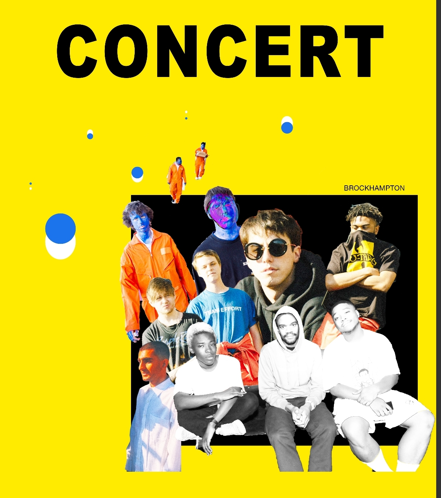

brockhampton Flyer
For one of my design classes I had to make concert posters. I decided to make two for an upcoming Brockhampton concert.
Brockhampton has a distinct look to their merchandise and posters that I wanted to recreated in my poster. Their original mixtape cover was a poorly cut together collage of pictures of each of the members. The logo was made in the same style as the font they use in their music videos which is very recognizable to fans of this group. I used illustrator to achieve this gradation of the font color.
I wanted it to see kind of old or wrinkled as they have a very alternative type of look so I used old paper filters over the whole piece.
I used filters and different modes in photoshop to distort the images more and make the cut out look more noticeable.
On the right is a rough draft of the poster.
I made the name of the group so small and was still messing with layer modes. I added more information and change some of the layout around because it didn’t flow properly to my eyes.
 I had another poster idea that I eventually dropped. This one followed the style of Brockhampton’s official posters less than the other poster I created.
I had another poster idea that I eventually dropped. This one followed the style of Brockhampton’s official posters less than the other poster I created.
It has the font similar to the title songs of Brockhamton. This poster used more cut out paper elements to give a collage-like feel to it. I used an old paper texture to give it a worn out look.
On the main image, I used multiple filters and layer modes on it to make it the focal point of the poster as it is an image of most of the members.
I left many imperfections in the poster since their own posters and not usually perfect looking either.